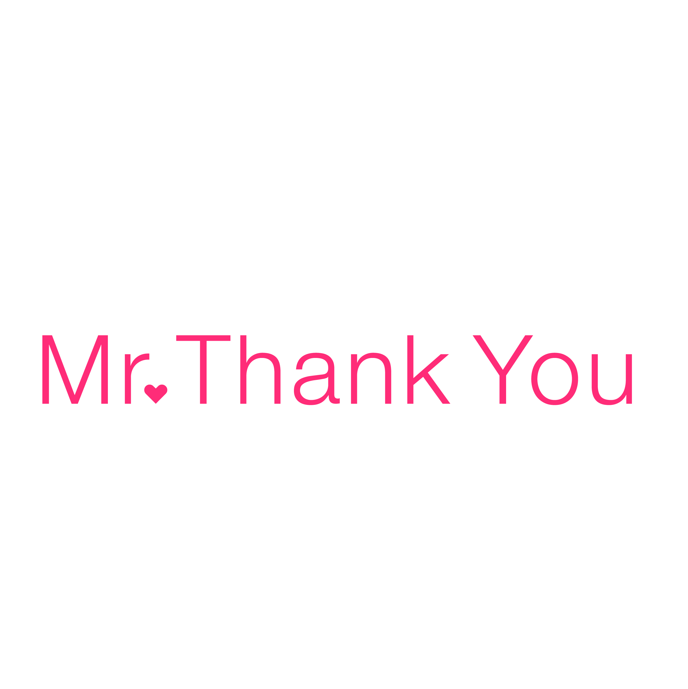

Новинка
Leather Trucker Cap$58
Кожаная панель, сетка сзади

Три цвета, одно семейство шрифтов, одна сетка. Ниже — значения, которые подставляются в макет и в код, живые компоненты и главная страница магазина, собранная на них.
Три цвета держат всё: белый — фон, чёрный — текст и тёмные блоки, розовый — акцент. Розовый работает только на действиях и цифрах, фоном его не заливают. Серые — служебные: границы, подложки, второстепенный текст. Клик по образцу копирует значение.
Одно семейство — Inter. Кегли не выдуманы: взяты пропорции презентации и приведены к экрану, где основной текст равен 16px. Начертания три: 400 для текста, 700 для заголовков, 900 для крупной фоновой надписи.
| Пример | Токен | Размер | Начертание | Где применяется |
|---|---|---|---|---|
| Thank you | --fs-display | 36–70 / 1.05 | 700 | Заголовок первого экрана |
| Заголовок H1 | --fs-h1 | 40 / 1.05 | 700 | Заголовок страницы |
| 78M+ | --fs-stat | 48 / 1.05 | 700 | Цифры статистики, только розовым |
| Заголовок секции | --fs-h2 | 28 / 1.15 | 700 | Начало блока |
| Название товара | --fs-h3 | 20 / 1.15 | 700 | Карточка, подзаголовок |
| Вводный абзац под заголовком | --fs-lead | 18 / 1.5 | 400 | Лид первого экрана |
| Основной текст страницы | --fs-body | 16 / 1.5 | 400 | Абзацы, описания |
| Второстепенная подпись | --fs-small | 13 / 1.5 | 400 | Подписи, характеристики |
| Shipping & returns | --fs-small | 13 / 1.5 | 400 | Ссылки подвала и нижняя строка с копирайтом |
| Подпись под цифрой | --fs-label | 12 / 1.5 | 700 | Мелкие метки: цена, счётчик, подпись к фото |
| Our story | --fs-label | 12 / 1.5 | 700 | Пункты меню в шапке, заголовки колонок подвала, текстовая ссылка |
Шаг сетки — 4px, всё кратно ему. Страница идёт на всю ширину экрана с полем 40px по краям, на мобильном поле сжимается до 20px. Расстояние между секциями задаётся одним значением и меняется вместе с шириной экрана.
| Токен | Значение | Назначение |
|---|---|---|
--gutter | 40px → 20px | Поле по краям страницы |
--sect-y | 64–120px | Вертикальный отступ секции |
--measure | 68ch | Ширина текстового абзаца |
--space-2 … --space-30 | 8 · 12 · 16 · 24 · 32 · 40 · 48 · 64 · 80 · 120 | Внутренние отступы и промежутки |
--r-sm … --r-pill | 8 · 12 · 16 · 24 · 999 | Скругления: вложенный элемент, кнопка, плитка, панель, таблетка |
--border-width | 1px | Толщина всех обводок |
--shadow-md | 0 8 20 / 8% | Мягкая тень, только на всплывающих элементах |
--shadow-focus | 0 0 0 3px розовый 35% | Обводка фокуса при работе с клавиатуры |
--r-sm — элемент внутри плитки с отступом 8–16px--r-md — кнопки, поля, чипы: интерактив по умолчанию--r-lg — карточка товара, плитка, кадр--r-xl — панель во всю ширину--r-pill — кнопка-таблетка, метка на фотоДва знака: полное написание и монограмма. Каждый — в трёх цветах: чёрный на светлом, белый на тёмном, розовый как акцент. Знак не растягивают, не наклоняют и не перекрашивают в другие цвета. Свободное поле вокруг — не меньше высоты буквы «M».


Ниже — живые элементы, а не картинки: они собраны тем же кодом, что и главная страница магазина. Меняется значение в системе — меняются и они, и сайт.
Высота 48px, скругление --r-pill, подпись прописными с трекингом --ls-label. Главное действие на экране одно: розовая — в карточке и в корзине, чёрная — на первом экране, где розовый уже занят акцентом в заголовке. Контурная — второстепенное. Светлая контурная — для тёмных блоков. Ссылка .link — не кнопка: тот же кегль --fs-label и вес 700, но вместо заливки розовая линейка снизу 2px. Стоит рядом с кнопкой как необязательное второе действие.
Квадратная подложка --surface, скругление --r-lg. Название и цена в одну строку, характеристика — мелким серым. Метка «Новинка» и кнопка «В корзину» появляются поверх фото.
Кожаная панель, сетка сзади

Итальянский ацетат, UV400

Шесть предметов, мытый шёлк
Полоса неровной высоты: 440 / 320 / 380px, выключка по нижнему краю. Подложка --surface, скругление --r-lg, у первой — --primary-tint. Подпись под фото, не поверх него.
Высота поля 48px, обводка --input, скругление --r-md. Фокус — розовая обводка --shadow-focus, чтобы поле было видно при работе с клавиатуры. Блок лежит на --primary-tint со скруглением --r-xl.
Шесть новых предметов, тот же ограниченный тираж.
Четыре строки на линейках, а не карточки: слева заголовок --fs-h3 в колонке 24ch, справа пояснение серым. Линейка сверху у каждой и снизу у последней.
Финальная сборка: страница целиком построена на этой системе — ни одного цвета и кегля мимо неё. Порядок блоков взят из присланных прототипов, оформление — из презентации. Открывается в браузере, работает на телефоне и на десктопе.
Система лежит обычными файлами. Разработчику достаточно подключить их в таком порядке — дальше все компоненты берут значения сами.
| Папка | Что внутри | Зачем |
|---|---|---|
tokens/ | Цвет, шрифт, кегли, отступы, скругления, тени, роли | Единственный источник значений |
site/ | Главная страница и её стили | Готовая сборка и пример применения |
docs.css, index.html | Эта страница | Справочник по системе для команды |
assets/logos/ | Логотип и монограмма в трёх цветах, векторные .ai | Сайт, печать, аватары |
assets/mockups/ | Товар на прозрачном фоне | Карточки и плитки категорий |
tokens/ в указанном порядке — сначала значения, последним semantic.csssite/site.css — кнопки, карточки, плитки, поля, шапка и подвалtokens/, а не в отдельный файл страницы